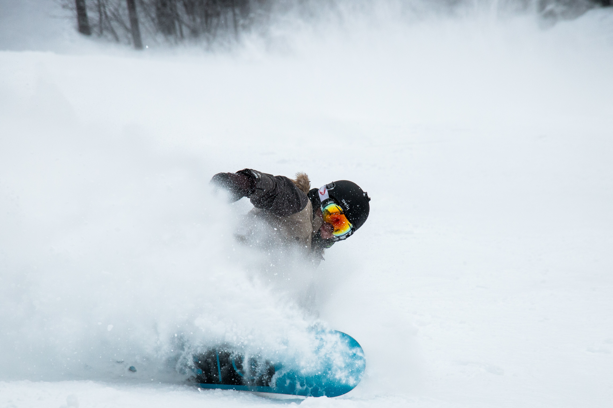

Overzicht
- Tennis
- Snowboarden
- Muziek
Tennis
 Ik speel al tennis vanaf mijn 24 jaar. Ik heb tennistraining 1 keer in de week. Hier leer ik serveren, forehand, backhand, volley's
Ik speel al tennis vanaf mijn 24 jaar. Ik heb tennistraining 1 keer in de week. Hier leer ik serveren, forehand, backhand, volley's
en en positie op het veld.
Verder doe ik regelmatig eens een tornooi mee die in de buurt georaganiseerd worden.
Door deze tornooien leer je veel nieuwe mensen kennen.
op dit moment heb zit ik in het klassement van 10 punten.
Snowboarden

Ik snowboard al vanaf mijn 10 jaar. Dit is mijn favoriete hobby. Ik zorg ervoor dat ik minsten 1 week per jaar naar de bergen op vakantie kan gaan.
Het liefst ga ik snowboarden in Oostenrijk,
daar zijn de gezelligste hutjes op de pistes om te eten en drinken en de après-ski mogen we zeker en vast niet vergeten.
Het liefst van al board ik graag in de diepsneeuw buiten de pistes of in het snowpark wat 'jumps' en 'rail' nemen.
Muziek
 Om mijn creativiteit te werk laten gaan speel ik gitaar al van mijn 16 jaar. Dit heb ik op mijn eigen geleerd zonder notenleer maar met behulp van tabs en video's op Youtube.
Om mijn creativiteit te werk laten gaan speel ik gitaar al van mijn 16 jaar. Dit heb ik op mijn eigen geleerd zonder notenleer maar met behulp van tabs en video's op Youtube.
Ik kan wel 4 uur op een dag op mijn gitaar tokkelen en mij helemaal laten gaan, Nieuwe liedjes leren of mijn eigen liedjes maken.